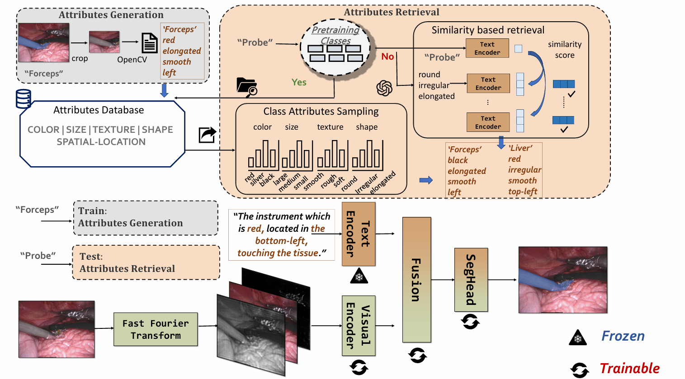
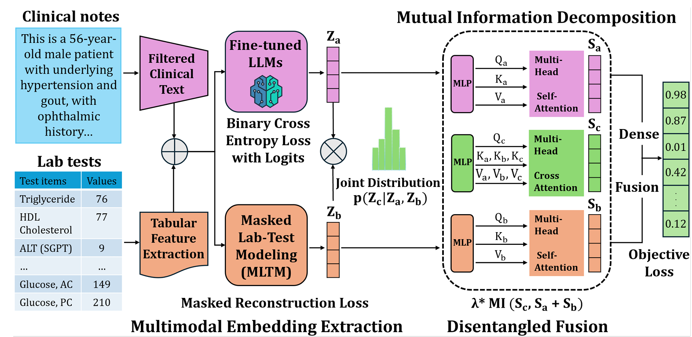

News
- Sep. 2026 📝 One paper working on Privacy-Preserving Visual Generation submitted to ICLR'27!
- Sep. 2026 🎓 Started my Ph.D. journey at Virginia Commonwealth University, Richmond, USA!
- Jul. 2026 📝 One paper working on Interpretable Vision-Language Reasoning submitted to AAAI'27!
- Apr. 2026 📝 New preprint on open‑ended surgical segmentation released on arXiv!
- Jun. 2025 🎓 Completed Bachelor’s degree in Shanghai University of Finance and Economics (SHUFE)!
- Nov. 2024 📝 One paper accepted at CIKM 2024!
Selected Publications

We introduce ReferEndoscopy, the first large-scale instruction-based endoscopic RIS benchmark, and propose the AR-ERIS framework for open-vocabulary compositional referring segmentation, w.r.t. the frequency properties of scene objects. Our method achieves state-of-the-art performance on both simulated and real-world endoscopic data.

We propose MEDFuse, a multimodal EHR fusion framework integrating masked lab-test modeling and fine-tuned LLMs to unify structured lab results and unstructured clinical notes. Evaluated on MIMIC-III and internal FEMH datasets, MEDFuse reaches over 90% F1 score on 10-disease multi-label classification for reliable clinical prediction.
Experiences
Honors and Awards
- Graduate Research Assistantship, Virginia Commonwealth University (Aug. 2026 - Present)